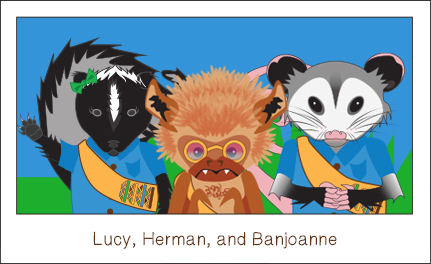
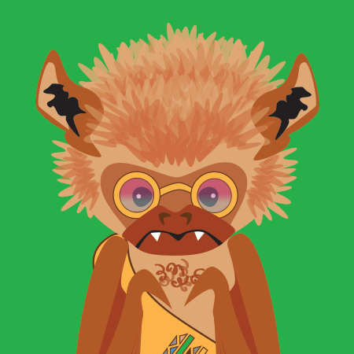
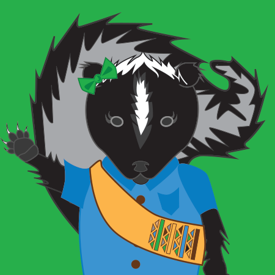
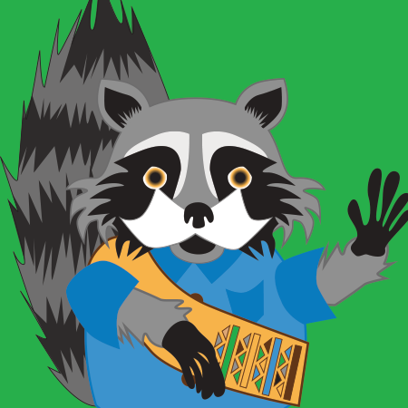
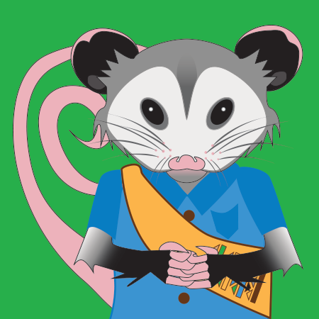
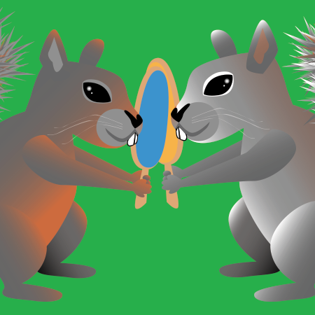

Meet the Kentucky Critter Crew!

Herman the Eastern Red Bat

Herman is very 70's. His hero is Bob Ross and he lives in Mammoth Cave. He loves to fly around the happiest of trees, though he is sometimes sad that he cannot wear shirts. "The uniform shirt is groovy, man." Sigh. Help him get through the tricky Mammoth Cave stalactites and stalagmites in the Flappy Bat game!
Lucy the Skunk

Lucy is very kind and loyal, but packs a nasty stench if you get on her bad side. It is very important to defend yourself, after all!
Marko the Raccoon

Marko is the troop leader and can sew patches in seconds flat! He is very resourceful and loves to share information. He has his mischievous side, however...
Banjoanne the Opossum

Banjoanne is very mysterious and misunderstood at times. She happens to be very caring and maternal, but operates under the radar. Once you get to know her, she becomes a very close friend. Does not know how to play banjo, but can rock a tuba.
Pasqual and Rascal

Two odd squirrels that play pong well into the night. They are close friends, despite being from different species. Rascal likes corn dogs.